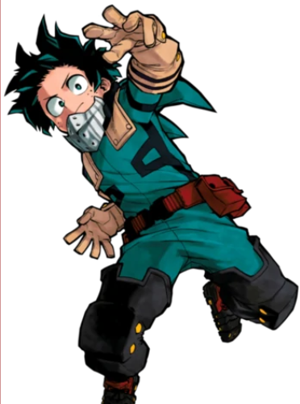
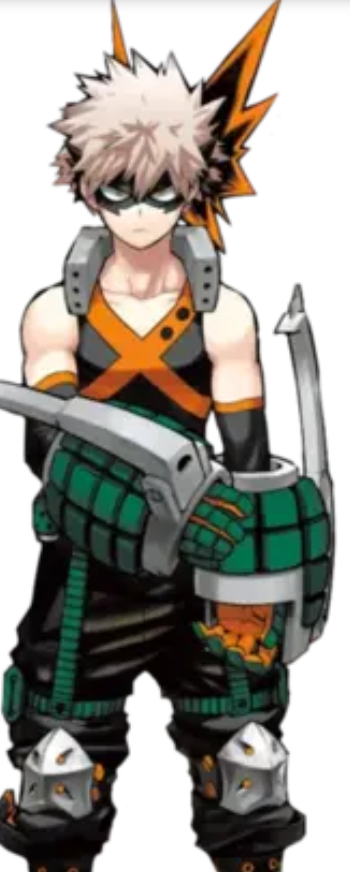
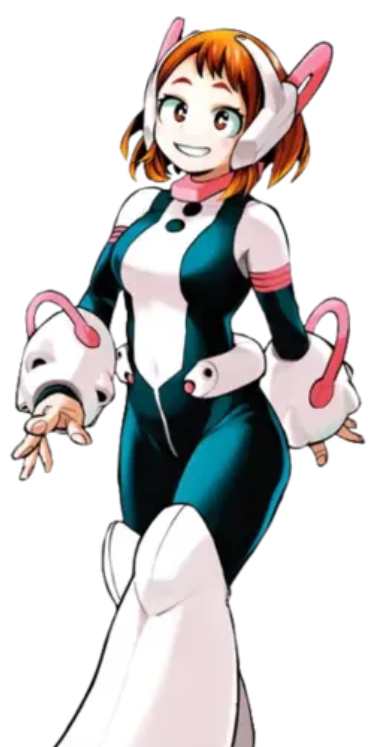
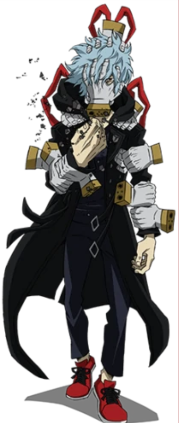

My Hero Academia
There is a world where 80% of the population has superpowers. They are called alter, the heroes make part of everyday life. And supervillains too! Facing them stands the invincible All Might, the mightiest of heroes. Little Izuku Midoriya aka Deku is an absolute fan. He has only one dream: to enter to the hero academy to follow in the footsteps of his idol. The problem is that he is one of the 20% who have no power... His destiny is turned upside down the day his path crosses that of All Might himself! The latter offers him an unexpected chance to see his dream come true. For young Deku, a long way with many training is reserved for him.
Izuku Midoriya
All Might

Katsuki Bakugô
Shôto Todoroki

All For One

Ochaco Uraraka
Tomura Shigaraki
- -Liste des arcs :
- -Entrance Exam bow
- -Quirk Apprehension Test Arc
- -Combat Trial Bow
- -Arc USJ
- -UA Sports Festival Bow
- -Hero Slayer Bow
- -Final Exam Arc
- -Forest Training Camp Arc
- -Hideout Raid Arc
- -Provisional Hero License Exam Arc
- -Shie Hassaikai Bow
- -Remedial Class bow
- -UA School Festival Arc
- -Arc Pro Hero
- -Seal Arch Formation
- -Liberation Army Meta Arc
- -Endeavor Agency Arc
- -Paranormal Liberation War Arc
- -Escaped from Tartarus Arc
- -Starry and Striped Bow
- -Current arc
Learn more about Arcs:Detailed page
ADN

Netflix
Wakanim